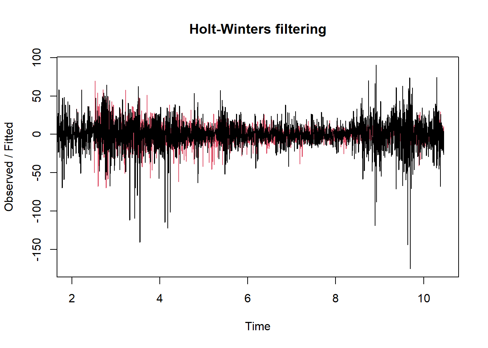

Chapter 11 Holter-Winter
La metodología Holt-Winters, también conocida como triple suavizado exponencial, es útil para series de tiempo con componentes de tendencia y estacionalidad.
## Warning: package 'forecast' was built under R version 4.2.3# Ajustar el modelo Holt-Winters
hw_model <- HoltWinters(soybean_ts)
# Visualizar componentes del modelo
plot(hw_model)
# Pronosticar los siguientes 30 días (o la cantidad que desees)
library(forecast)
hw_forecast <- forecast(hw_model, h = 30) # Cambia 30 por el número de periodos que quieras pronosticar
plot(hw_forecast)
## Length Class Mode
## fitted 12344 mts numeric
## x 3451 ts numeric
## alpha 1 -none- numeric
## beta 1 -none- numeric
## gamma 1 -none- numeric
## coefficients 367 -none- numeric
## seasonal 1 -none- character
## SSE 1 -none- numeric
## call 2 -none- call##
## Forecast method: HoltWinters
##
## Model Information:
## Holt-Winters exponential smoothing with trend and additive seasonal component.
##
## Call:
## HoltWinters(x = soybean_ts)
##
## Smoothing parameters:
## alpha: 0.001514729
## beta : 0
## gamma: 0.3525257
##
## Coefficients:
## [,1]
## a -1.956309078
## b -0.001484417
## s1 -14.281107092
## s2 4.583967378
## s3 2.918793461
## s4 -2.789000303
## s5 16.443962574
## s6 10.324885438
## s7 17.933824650
## s8 5.227538747
## s9 -11.332855543
## s10 0.963450269
## s11 3.006261120
## s12 1.803077568
## s13 -3.372927065
## s14 -0.286317331
## s15 -6.262594113
## s16 0.462270912
## s17 6.239814363
## s18 4.799396311
## s19 -4.146463534
## s20 -9.703369870
## s21 3.719285245
## s22 6.924404043
## s23 -0.322275263
## s24 18.803061258
## s25 -23.827895496
## s26 11.564351838
## s27 -6.134173103
## s28 11.365624802
## s29 6.817464887
## s30 -6.404630586
## s31 1.182661250
## s32 0.668715285
## s33 18.859190485
## s34 10.309870898
## s35 -16.759165840
## s36 7.158833838
## s37 19.005655277
## s38 -4.237196909
## s39 2.587979255
## s40 10.746441111
## s41 5.349276176
## s42 8.702955612
## s43 3.630210455
## s44 -10.924486006
## s45 -1.965773652
## s46 0.945128150
## s47 10.236617208
## s48 4.125157663
## s49 -5.219359050
## s50 -6.619939049
## s51 -21.193379399
## s52 12.984113174
## s53 7.723779327
## s54 16.780446641
## s55 -0.162082988
## s56 -4.704009268
## s57 -18.571373311
## s58 -14.156340320
## s59 -12.703585137
## s60 15.060195235
## s61 17.053278484
## s62 7.283202539
## s63 -20.781088204
## s64 1.985091856
## s65 6.134516491
## s66 -52.342262066
## s67 14.417589393
## s68 -8.419114089
## s69 -9.274947091
## s70 -6.024054427
## s71 11.069394177
## s72 2.827748510
## s73 27.514726331
## s74 18.077345868
## s75 14.726646620
## s76 8.709806740
## s77 -16.219917936
## s78 -8.324257848
## s79 -1.276683386
## s80 30.529461754
## s81 10.201361073
## s82 -0.137173236
## s83 26.177548608
## s84 -1.444200669
## s85 12.811192394
## s86 -13.431936931
## s87 -60.820413303
## s88 -6.669146357
## s89 11.422568416
## s90 7.684110273
## s91 -10.000892420
## s92 14.125307650
## s93 19.214550159
## s94 0.538559388
## s95 -2.874808287
## s96 17.784586776
## s97 -28.230526832
## s98 0.771334656
## s99 -0.498737674
## s100 -5.881432758
## s101 12.774001259
## s102 -5.361351292
## s103 -10.687103592
## s104 0.422286320
## s105 0.428605345
## s106 38.638905544
## s107 -10.554984367
## s108 -7.766191307
## s109 -14.398407981
## s110 -2.773298946
## s111 9.088082546
## s112 2.486688811
## s113 -13.372005559
## s114 1.293653550
## s115 -5.531005265
## s116 0.145331133
## s117 7.021019182
## s118 6.308660885
## s119 4.272316145
## s120 -10.798436363
## s121 13.075192573
## s122 2.340166812
## s123 1.586274216
## s124 -7.783044624
## s125 4.557803654
## s126 0.887639104
## s127 10.302310196
## s128 1.842563088
## s129 3.103742116
## s130 -3.664794016
## s131 5.185257531
## s132 -1.535217711
## s133 -0.959775839
## s134 8.513180682
## s135 6.917627484
## s136 -20.942086358
## s137 1.534178685
## s138 -3.488710973
## s139 2.785545805
## s140 -5.993975793
## s141 8.962741704
## s142 11.072889880
## s143 3.115042078
## s144 -7.254170594
## s145 8.589108499
## s146 5.511724446
## s147 3.791181047
## s148 16.773516706
## s149 -9.351130261
## s150 2.788854437
## s151 3.402704414
## s152 -1.043280871
## s153 -5.583551155
## s154 -6.439560106
## s155 -1.968067528
## s156 -2.509718145
## s157 -9.727873812
## s158 1.844410463
## s159 -3.993091601
## s160 -17.642176946
## s161 18.934914731
## s162 9.982863021
## s163 -17.415211021
## s164 2.594499451
## s165 -1.241668740
## s166 -5.701246552
## s167 14.042612941
## s168 6.085406103
## s169 19.205564134
## s170 -8.556902915
## s171 8.126886625
## s172 -19.076516734
## s173 0.233830853
## s174 3.985080649
## s175 -2.589684926
## s176 13.189264317
## s177 3.124277141
## s178 1.130484976
## s179 0.337039064
## s180 4.944833119
## s181 3.277836557
## s182 3.585703609
## s183 4.034900177
## s184 -16.129832582
## s185 -7.699941984
## s186 0.768739710
## s187 15.056250629
## s188 5.622358119
## s189 3.004545292
## s190 -1.539276651
## s191 6.943821408
## s192 -4.631462369
## s193 2.954004611
## s194 -5.444204562
## s195 1.838126421
## s196 -0.438287461
## s197 -1.747127540
## s198 -6.973611058
## s199 4.701637451
## s200 15.673685991
## s201 -15.214330625
## s202 6.054159010
## s203 -2.668629163
## s204 -11.320034526
## s205 -1.705173481
## s206 -0.139890969
## s207 5.294734477
## s208 -1.728024085
## s209 8.473214930
## s210 -1.797720807
## s211 -0.484639902
## s212 3.589397584
## s213 -2.538577090
## s214 -3.400238313
## s215 1.013407215
## s216 -3.034096139
## s217 11.362873970
## s218 -1.565963913
## s219 2.504461213
## s220 -5.755246471
## s221 -4.765770508
## s222 -5.848807681
## s223 5.890564209
## s224 3.341836926
## s225 -0.123618413
## s226 9.129945747
## s227 -2.768004714
## s228 -1.386249039
## s229 -2.245768072
## s230 -0.738299646
## s231 -3.822233531
## s232 1.577293282
## s233 -9.767695446
## s234 -1.406284490
## s235 -7.984184425
## s236 6.660660256
## s237 -9.008938635
## s238 -5.462878289
## s239 -7.774807820
## s240 4.689961531
## s241 0.316274044
## s242 8.338475159
## s243 3.274439073
## s244 1.541567724
## s245 14.517455502
## s246 10.107297591
## s247 2.873418596
## s248 -5.070127357
## s249 -7.227995875
## s250 2.882082138
## s251 6.437505324
## s252 6.022566326
## s253 -1.276883731
## s254 1.218193190
## s255 8.014697956
## s256 2.405092647
## s257 -3.252225506
## s258 -6.255668028
## s259 -7.066579992
## s260 -10.356730348
## s261 0.732950910
## s262 2.301288354
## s263 0.597009600
## s264 13.014558077
## s265 7.521123616
## s266 -12.779138369
## s267 9.936677896
## s268 -2.161198378
## s269 9.101181300
## s270 4.612225101
## s271 -2.930265218
## s272 -8.607186806
## s273 -0.667087647
## s274 -6.384333437
## s275 -16.523323621
## s276 -7.910359682
## s277 -5.256690995
## s278 4.152261541
## s279 -13.043807083
## s280 11.845051806
## s281 -1.649115232
## s282 5.540278549
## s283 4.355176149
## s284 -0.131221788
## s285 -8.525090144
## s286 -2.374613493
## s287 14.845366060
## s288 11.017276896
## s289 -0.018068338
## s290 3.966174246
## s291 9.547042983
## s292 3.827112252
## s293 17.737180826
## s294 -4.097908116
## s295 10.419446687
## s296 -10.439847082
## s297 15.549634656
## s298 18.802313234
## s299 13.621057297
## s300 14.119159743
## s301 -6.239446363
## s302 4.098248133
## s303 5.139944965
## s304 -6.221887920
## s305 -11.000667990
## s306 5.367833229
## s307 25.690902113
## s308 0.751969263
## s309 2.404252372
## s310 2.125755879
## s311 -15.287870653
## s312 7.762514032
## s313 8.715786595
## s314 -2.961338001
## s315 13.118075667
## s316 -0.095105776
## s317 0.909746450
## s318 13.527743369
## s319 4.029237790
## s320 2.852507912
## s321 9.380474865
## s322 15.578169175
## s323 -1.259331563
## s324 20.736203575
## s325 -8.442833932
## s326 -12.895353116
## s327 -12.825743787
## s328 -2.429578068
## s329 2.466763620
## s330 3.651870134
## s331 10.929447482
## s332 -1.281158026
## s333 18.907315157
## s334 1.141116822
## s335 -24.392039230
## s336 10.717720913
## s337 17.166313951
## s338 -26.982749924
## s339 2.347101671
## s340 -1.773847480
## s341 8.720875733
## s342 10.777380913
## s343 -9.788890170
## s344 5.572597045
## s345 1.370140288
## s346 8.358486698
## s347 -1.112756287
## s348 -5.070891534
## s349 6.395207036
## s350 -4.593278895
## s351 6.223447947
## s352 -0.636257178
## s353 13.487744658
## s354 -12.950928513
## s355 5.783229847
## s356 -9.222502283
## s357 -8.099446486
## s358 6.229268883
## s359 -6.863331798
## s360 -6.887955686
## s361 -1.793440218
## s362 7.978422122
## s363 2.222290658
## s364 -0.980390028
## s365 9.010606175
##
## Error measures:
## ME RMSE MAE MPE MAPE MASE ACF1
## Training set 0.3613456 20.36234 14.07412 NaN Inf 0.7997668 0.02176005
##
## Forecasts:
## Point Forecast Lo 80 Hi 80 Lo 95 Hi 95
## 10.45753 -16.2389006 -42.334415 9.8566136 -56.14855 23.67074
## 10.46027 2.6246895 -23.470855 28.7202336 -37.28500 42.53438
## 10.46301 0.9580311 -25.137543 27.0536052 -38.95171 40.86777
## 10.46575 -4.7512470 -30.846851 21.3443570 -44.66103 35.15854
## 10.46849 14.4802314 -11.615403 40.5758654 -25.42960 54.39006
## 10.47123 8.3596699 -17.735994 34.4553338 -31.55020 48.26954
## 10.47397 15.9671247 -10.128569 42.0628185 -23.94280 55.87704
## 10.47671 3.2593543 -22.836369 29.3550781 -36.65061 43.16932
## 10.47945 -13.3025244 -39.398278 12.7932293 -53.21254 26.60749
## 10.48219 -1.0077030 -27.103487 25.0880807 -40.91776 38.90235
## 10.48493 1.0336235 -25.062190 27.1294370 -38.87648 40.94373
## 10.48767 -0.1710445 -26.266888 25.9247990 -40.08119 39.73910
## 10.49041 -5.3485336 -31.444407 20.7473399 -45.25873 34.56166
## 10.49315 -2.2634082 -28.359312 23.8324952 -42.17365 37.64683
## 10.49589 -8.2411694 -34.337103 17.8547639 -48.15146 31.66912
## 10.49863 -1.5177888 -27.613752 24.5781744 -41.42812 38.39254
## 10.50137 4.2582702 -21.837723 30.3542634 -35.65211 44.16865
## 10.50411 2.8163677 -23.279655 28.9123909 -37.09406 42.72679
## 10.50685 -6.1309765 -32.227030 19.9650765 -46.04145 33.77949
## 10.50959 -11.6893673 -37.785450 14.4067157 -51.59988 28.22115
## 10.51233 1.7318034 -24.364310 27.8279164 -38.17876 41.64236
## 10.51507 4.9354378 -21.160705 31.0315807 -34.97517 44.84604
## 10.51781 -2.3127259 -28.408899 23.7834469 -42.22338 37.59793
## 10.52055 16.8111262 -9.285077 42.9073289 -23.09957 56.72182
## 10.52329 -25.8213150 -51.917548 0.2749177 -65.73206 14.08943
## 10.52603 9.5694479 -16.526815 35.6657106 -30.34134 49.48024
## 10.52877 -8.1305614 -34.226854 17.9657311 -48.04140 31.78027
## 10.53151 9.3677521 -16.728570 35.4640746 -30.54313 49.27863
## 10.53425 4.8181077 -21.278245 30.9144602 -35.09282 44.72903
## 10.53699 -8.4054722 -34.501855 17.6909102 -48.31644 31.50550